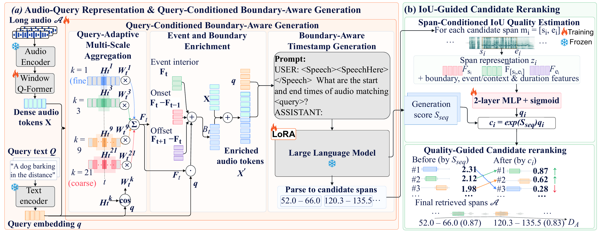
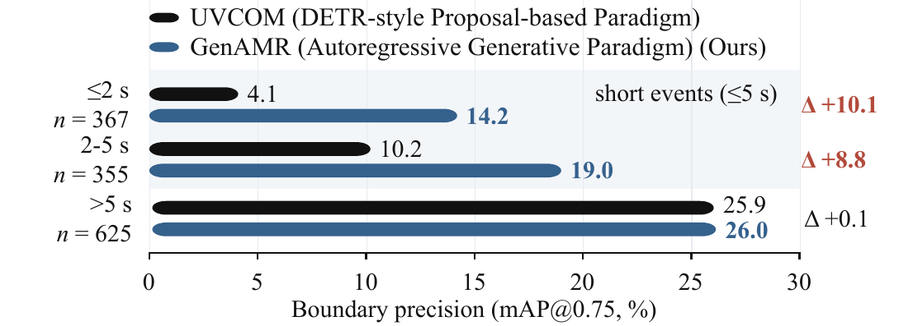

Find the moment that matches the query.
Select a CASTELLA example, listen to the long recording, and jump to the retrieved interval predicted by GenAMR.
From fixed proposals to query-conditioned generation.
GenAMR generates multiple timestamp intervals in one answer. Query-Conditioned Boundary-Aware Generation (QBAG) enriches dense audio tokens with multi-scale, event-interior, onset and offset evidence.
IoU-Guided Candidate Reranking (IGCR) estimates the localization quality of each parsed interval and combines it with the decoder’s sequence score.

Long audio. Repeated events. Precise boundaries.
Ground-truth and retrieved moments are compared across TimeAudio, UVCom and GenAMR. Click any figure to inspect it in detail.

Results on audio moment retrieval.
The complete comparison follows the main table in the paper. Higher is better for every metric.
Strong gains on short-event boundaries.
GenAMR improves mAP@0.75 by 10.1 points for events of at most 2 seconds and by 8.8 points for 2–5 second events, relative to UVCOM.

| Method | Setting | R1@0.5 | R1@0.7 | mAP@0.5 | mAP@0.75 | mAP-avg |
|---|---|---|---|---|---|---|
| DETR-style proposal-based paradigm | ||||||
| Moment-DETR [3] | CM→C | 19.30 | 10.80 | 17.20 | 7.00 | 8.20 |
| QD-DETR [4] | CM→C | 30.60 | 16.20 | 26.50 | 12.20 | 13.70 |
| UVCOM [5] | CM→C | 34.30 | 21.23 | 30.18 | 15.82 | 16.51 |
| Autoregressive generative paradigm | ||||||
| TimeAudio [11] | ZS | 13.07 | 9.38 | 11.42 | 7.04 | 6.21 |
| TimeAudio† [11] | FTAR→C | 27.39 | 17.15 | 23.63 | 13.93 | 14.79 |
| TimeAudio‡ [11] | FTAR→C | 32.00 | 20.64 | 28.49 | 17.79 | 18.45 |
| GenAMR (ours) | FTAR→C | 38.46 | 25.39 | 32.98 | 20.92 | 21.38 |
CM→C: CASTELLA fine-tuning from Clotho-Moment pre-training. FTAR→C: initialization from FTAR-tuned TimeAudio. ZS: zero-shot. † adapted TimeAudio; ‡ without token merging.
Component ablation
All variants retain the same autoregressive timestamp decoder; the matched reference keeps dense audio tokens without QBAG or IGCR.
| QBAG | IGCR | R1@0.5 | R1@0.7 | mAP@0.5 | mAP@0.75 | mAP-avg |
|---|---|---|---|---|---|---|
| × | × | 32.00 | 20.64 | 28.49 | 17.79 | 18.45 |
| ✓ | × | 35.41 | 21.60 | 30.63 | 18.74 | 19.43 |
| × | ✓ | 34.37 | 23.31 | 30.79 | 19.55 | 20.23 |
| ✓ | ✓ | 38.46 | 25.39 | 32.98 | 20.92 | 21.38 |
Start with the released demo.
open index.html
# optional live Gradio demo
python demo/gradio_app.py --device cuda
The static page runs without a GPU and uses precomputed test outputs for transparent qualitative inspection. The live wrapper follows the original TimeAudio generation path and requires the model checkpoints listed in the demo documentation.
Code and checkpoints will be released after acceptance, subject to the licenses of the underlying models and datasets.